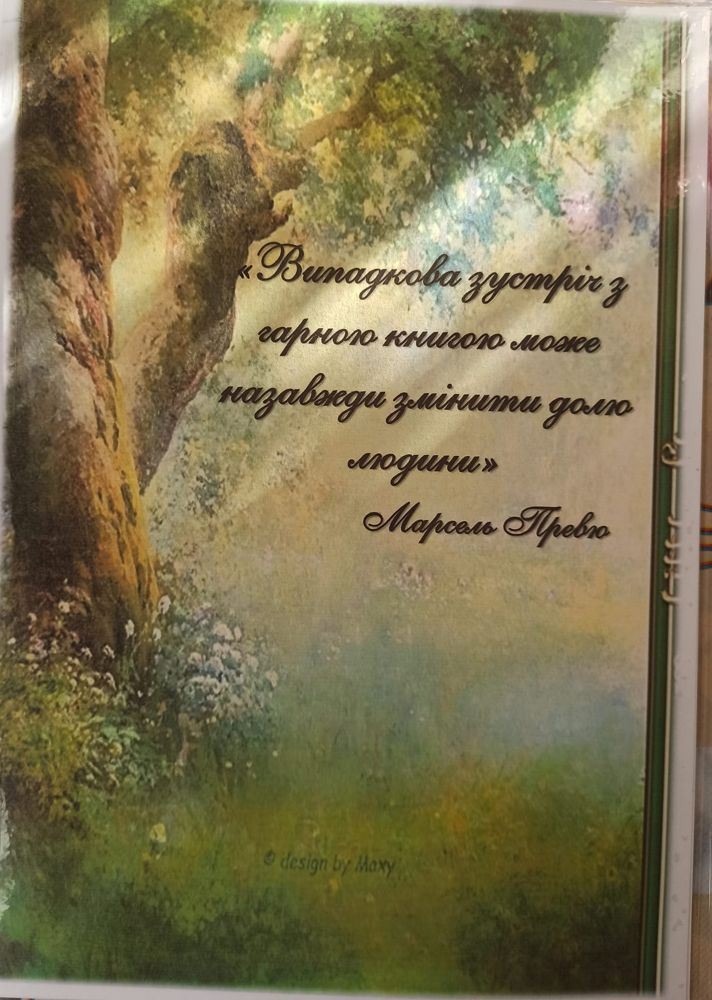
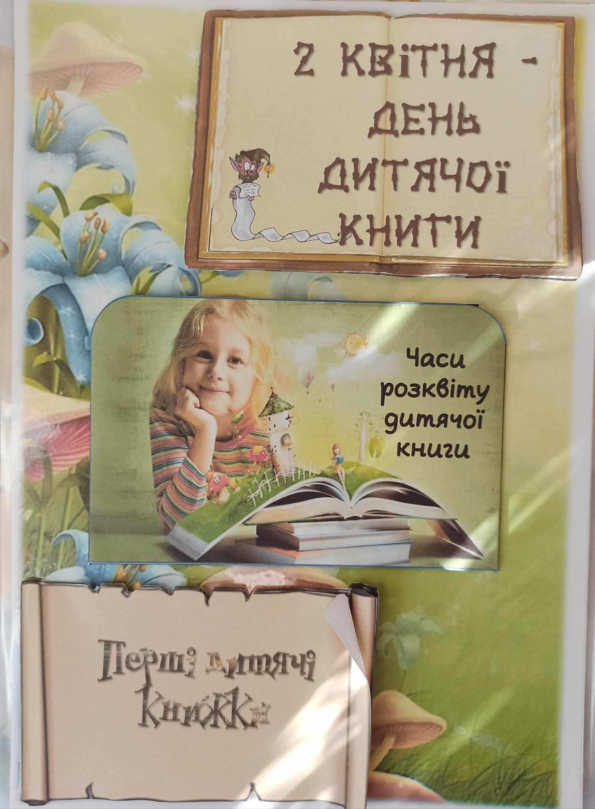
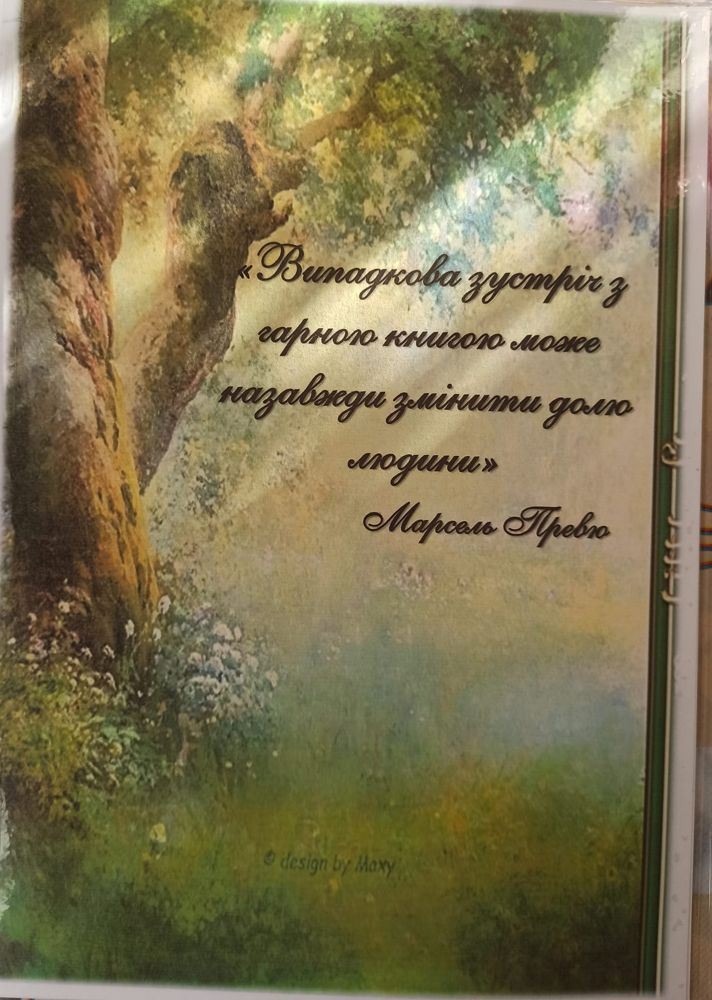
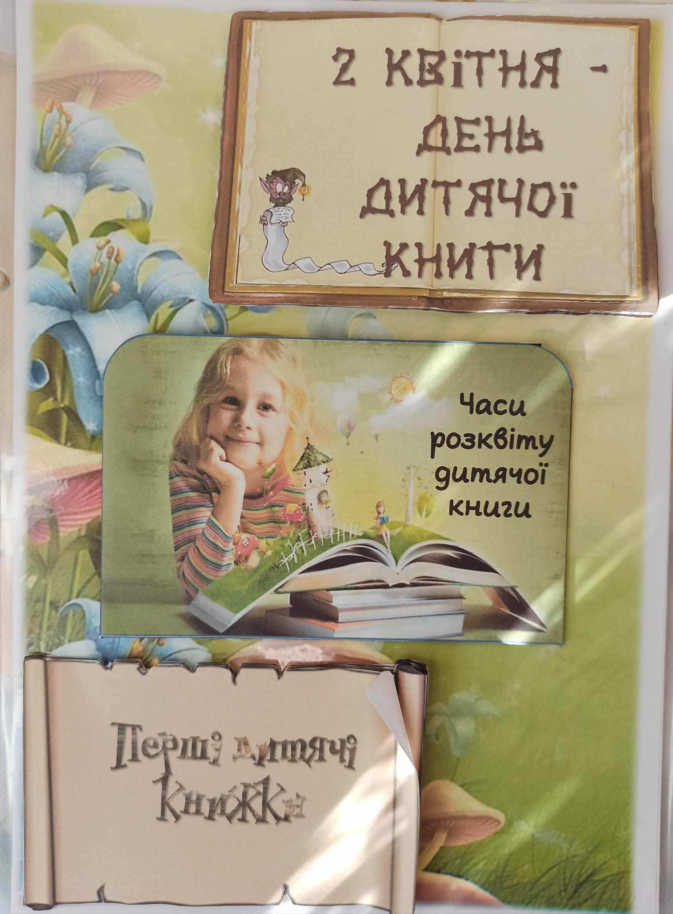
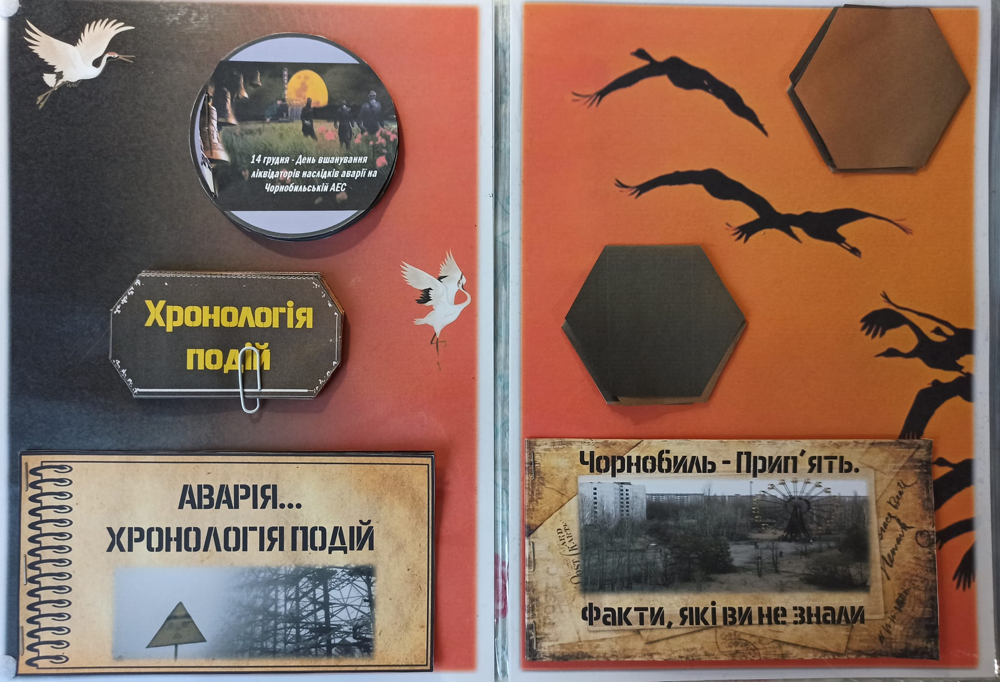
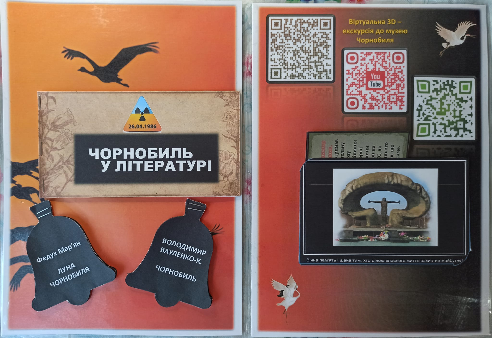
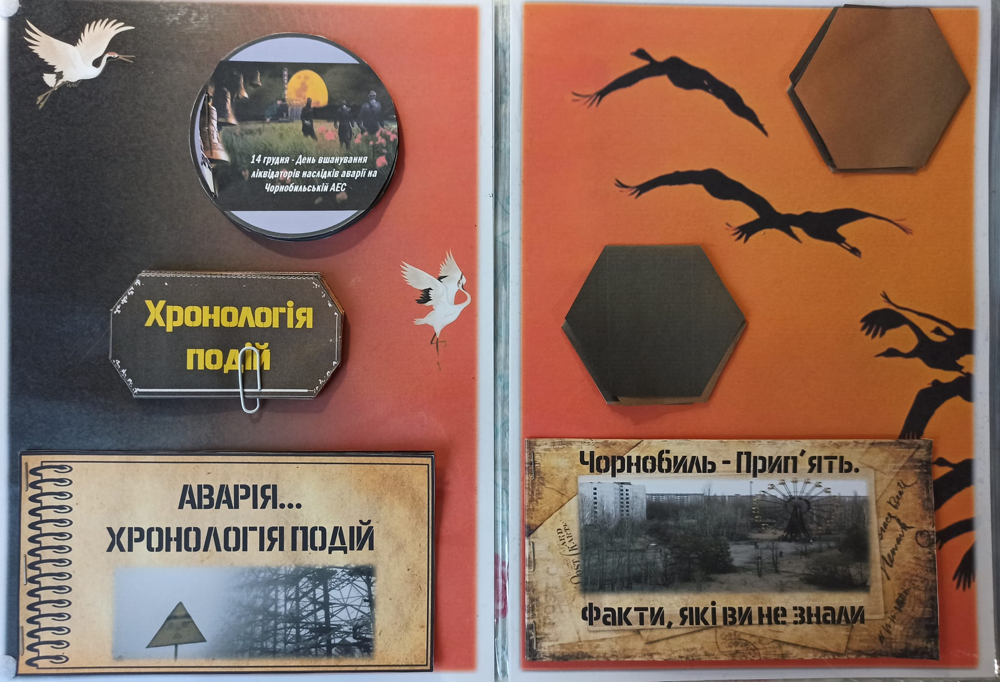
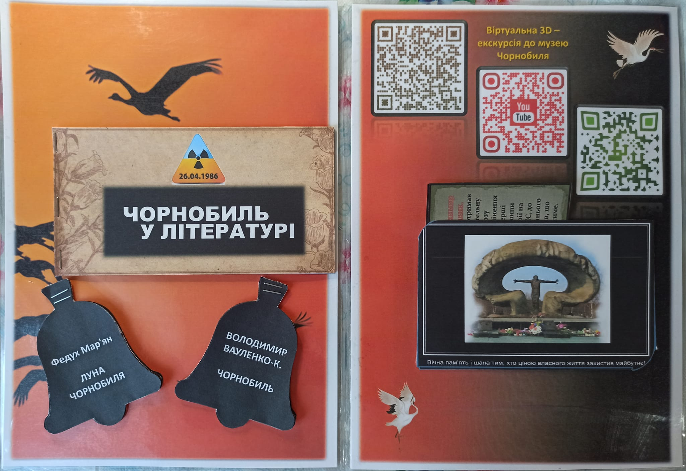

2-ге квітня всесвітній день книги
Книга! Вона поруч від самого народження. З книгою кожен із нас може мандрувати
в минуле і в майбутнє. Про все на світі розповідає книга…
2 квітня, у день народження великого казкаря з Данії Ганса Крістіана Андерсена,
світ відзначає Міжнародний день дитячої книги.
Презентую новенький МЕГА-лепбук «2 квітня – Міжнародний день дитячої книги» на 6
розгортань!!! Тут Ви знайдете все… Що це за день? Як виникла ідея святкувати день
дитячої книги, давні та нові дитячі книжки, відео-вікторини, безліч QR-кодів, ребуси,
пазли, доміно, розфарбовки, хмаринки слів; ігри «Тіні», «Знайти пару», «Так-ні», корисні
поради для читачів та ще багато-багато іншого корисного матеріалу, (всього 66 сторінок)
 



Купити


 


